4 Geocentric Models
This chapter introduce lienar regression as a Bayesian procedure. Thus we will apply probability measures for intepretation, as that is what Bayesian is.
4.1 Why Normal distributions are normal
This section examplifies why normal distributions are normal and how it is often seen in nature. Jesper shows an example where binomial random draws will tend to be centered around 0 as there are the most paths leading towards the middle. That is why we often find the normal distribution in real life.
It express that normal distributions come from addition of random events, e.g., the result of consecutive coin tosses. Also the product of small numbers approximate addition, hence the result of such outcomes is similar to the added scenario.
Although with large numbers we will tend not to get a normal distribution by finding the product hereof.
The book aim to teaach a strategy to model data and not a single model just for the toolbox.
4.2 A language for describing models
This chapter summarize how models are defined and defines mathematical terminalogy.
Recipe of defining models
Recognize the variables that you want to understand. Observable variables = data. While unobservable things = parameters, e.g., averages and rates, e.g., you dont observe GDP growth rates, but it can be deducted from assessing varaibles (observed data).
Each variable can be defined in terms of other variables or in terms of a probability distribution. This enables one to learn about associations between variables.
The combination of variables and their probability distributions defines a joint generative model. This can be used to simulate hypothetical observations as well as analyze real ones.
Mathematical terminology:
We see that \(W \sim Binomial(N,p)\) means that W (water) variable is binomial, it has two outcomes, yes or no. and then we have \(p ~ Uniform(0,1)\), means that p (proportion of water on the globe) is between 0 and 1.
Notice that the wavy symbol ~ means that the models are stochastic, i.e., there are no instances on the left that are known with certainty. I.e., W is distributed as binomial
Regarding priors:
The priors must be set before you see the data, as if you did not do that, then it is no more a prior.
If you have no idea what to set as a prior, then you set it to some random value, e.g., making it uniform to be within a specific range.
4.3 Gaussian model of height
The following is an example to understand normal distributions of normal distributions.
library(rethinking)
data(Howell1)
d <- Howell1 #d for data frame
str(d)## 'data.frame': 544 obs. of 4 variables:
## $ height: num 152 140 137 157 145 ...
## $ weight: num 47.8 36.5 31.9 53 41.3 ...
## $ age : num 63 63 65 41 51 35 32 27 19 54 ...
## $ male : int 1 0 0 1 0 1 0 1 0 1 ...We see that we have height, wiehgt, age and male.
This can also be summarized with mean, sd, percentiles and histograms.
precis(d)
|
|
|
|
|
And thus we see the distributions. We are only going to be working with people above or equal to 18 years of age.
Notice that we cannot use the histograms to suggest a distribution, that is because we need to select the priors on berforehand.
d2 <- d[d$age >= 18,]4.3.1 The model
Now we can define the model with with the following terms:
\[h_i \sim Normal(\mu,\sigma)\]
\(h_i \sim \mathcal{N}\), this is exactly the same, just shortened.
Meaning that height is stochastic, given the wavy character ~, it is normal with mu and sigma mean and standard deviation. The i means each element in vector h.
Now we can specify the priors. this is done independently for each parameter (unobserved). It looks the following:
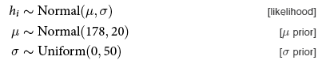
We see that we have the likelihood that consist of the priors, which are specified afterwards. This can be plotted with.
It means that the mean is centered in 178 and 20 standard deviation, thus two standard deviations (95% being 40), we will have 95% of the people within 178 +- 40.
curve(dnorm(x,178,20),from = 100,to = 250,main = 'Mean prior')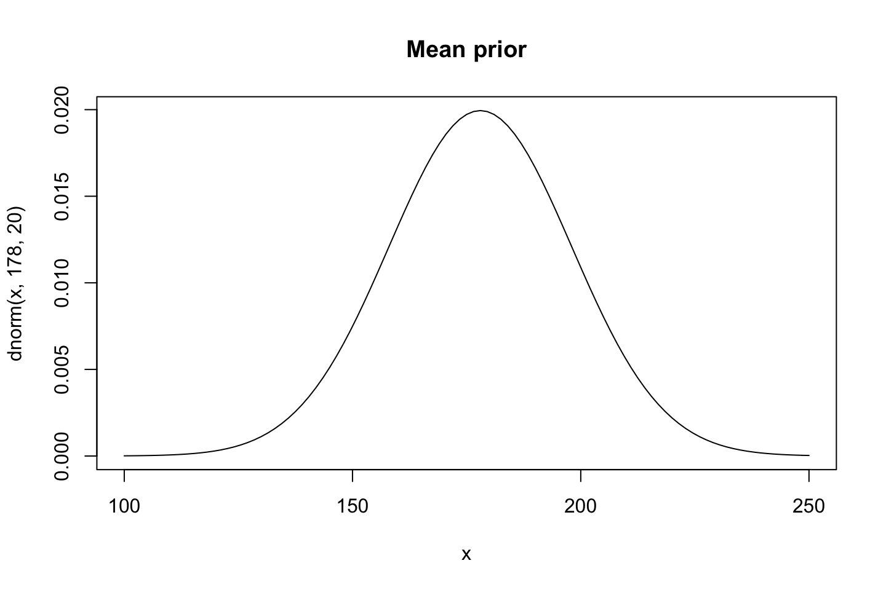
curve(dunif(x,0,50),from = -10,to = 60,main = "Sigma prior")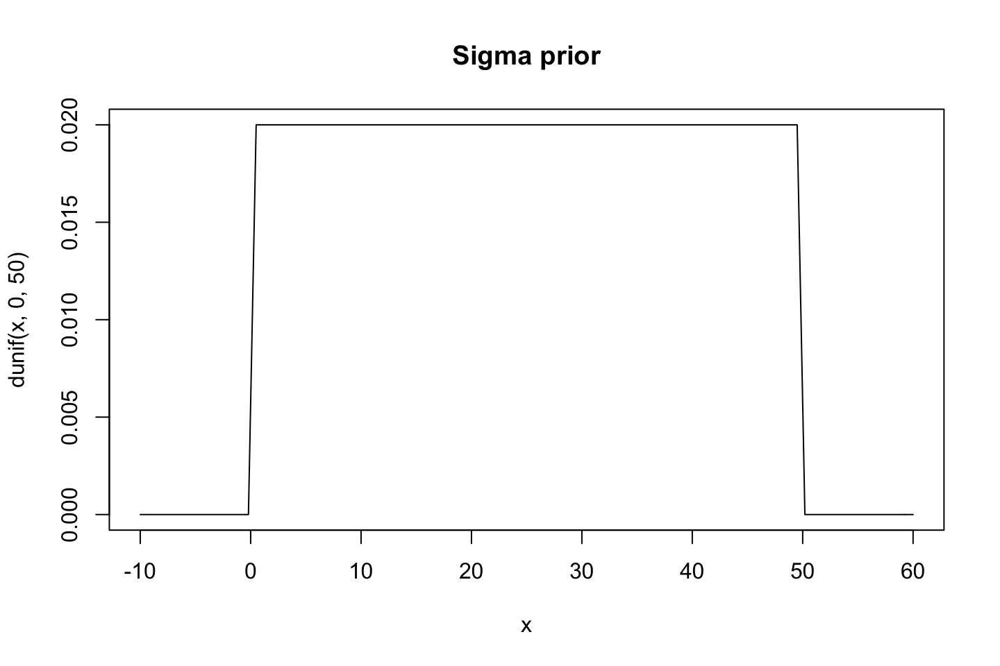
Now one can sample heights based on the two priors.
samples <- 10000
sample_mu <- rnorm(samples,178,20) #notice we cannot take the mean of the data, as it is a prior!!!
sample_sigma <- runif(samples,0,50)
prior_h <- rnorm(samples,sample_mu,sample_sigma)
dens(prior_h)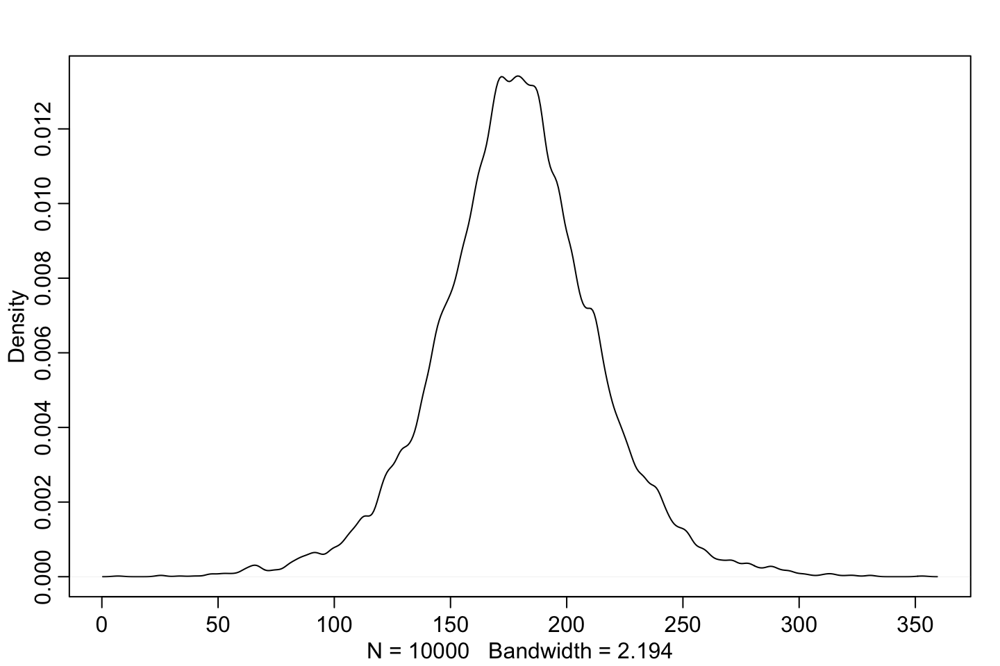
One see that the mean is around the 178. The more samples we draw, the more normal will it look.
Now this makes sense since the mean standard deviation is rather low, lets look at an example with a large standard deviation to the mean.
samples <- 10000
sample_mu <- rnorm(samples,178,100) #notice we cannot take the mean of the data, as it is a prior!!!
prior_h <- rnorm(samples,sample_mu,sample_sigma)
dens(prior_h)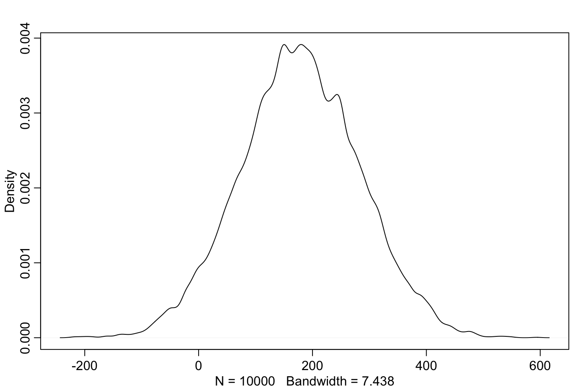
Now we see that the height can go all the way up to 600 and down to a negative number.
When you have a lot of data instances, then such a prior is not harmfull even though it clearly expects a lot of people being very tall and some even below 0. So having an unreasonable prior is not necessarily bad.
4.3.2 Grid approximation of the posterior distribution
mu.list <- seq(from=150, to=160, length.out=100)
sigma.list <- seq(from=7, to=9, length.out=100)
#Expand list, mu and sigma,
post <- expand.grid(mu = mu.list, sigma = sigma.list)
post$LL <- sapply(1:nrow(post), function(i) sum(
dnorm(x = d2$height
,mean = post$mu[i]
,sd = post$sigma[i]
,log = TRUE)
)
)
post$prod <- post$LL + dnorm( post$mu , 178 , 20 , TRUE) +
dunif(post$sigma,0, 50, TRUE)
post$prob <- exp(post$prod - max(post$prod))Now, lets inspect the posterior distribution
par(mfrow = c(2,1))
#A contour plot
contour_xyz(post$mu, post$sigma, post$prob)
#A heatmap
image_xyz(x = post$mu,y = post$sigma,z = post$prob)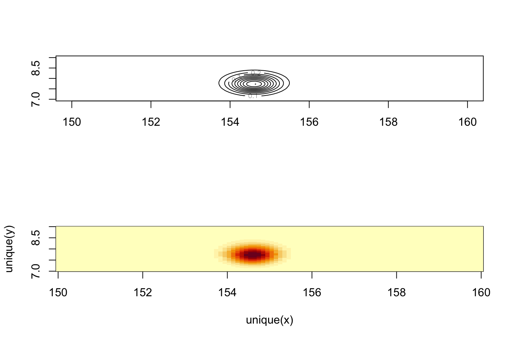
What we get from this, is the most probable combinations of the mu and sigma. Hence we see that very often the mean will be between 154 and 155 while the standard deviation is between 7.5 and 8.
4.3.3 Sampling from the posterior
Now we are going to sample from the posterior, just as in the globe tossing problem. Here we are just also to sample from the mean and standard deviation. This is done by first making a set of samples, where each row number is listed, basically just an index.
Then we use the index to return the given mean and standard deviation.
sample.rows <- sample(1:nrow(post),size = 10000, replace = TRUE) #We can draw the same instance twice
sample.mu <- post$mu[sample.rows]
sample.sigma <- post$sigma[sample.rows]We see that post$mu and sigma is a grid ranging from respectively 150 to 160 and 7 to 9. e.g.,
m <- matrix(post$mu,nrow = 100,ncol = 100)
head(m[1:10,1:10],n = 10)## [,1] [,2] [,3] [,4] [,5] [,6] [,7] [,8]
## [1,] 150.0000 150.0000 150.0000 150.0000 150.0000 150.0000 150.0000 150.0000
## [2,] 150.1010 150.1010 150.1010 150.1010 150.1010 150.1010 150.1010 150.1010
## [3,] 150.2020 150.2020 150.2020 150.2020 150.2020 150.2020 150.2020 150.2020
## [4,] 150.3030 150.3030 150.3030 150.3030 150.3030 150.3030 150.3030 150.3030
## [5,] 150.4040 150.4040 150.4040 150.4040 150.4040 150.4040 150.4040 150.4040
## [6,] 150.5051 150.5051 150.5051 150.5051 150.5051 150.5051 150.5051 150.5051
## [7,] 150.6061 150.6061 150.6061 150.6061 150.6061 150.6061 150.6061 150.6061
## [8,] 150.7071 150.7071 150.7071 150.7071 150.7071 150.7071 150.7071 150.7071
## [9,] 150.8081 150.8081 150.8081 150.8081 150.8081 150.8081 150.8081 150.8081
## [10,] 150.9091 150.9091 150.9091 150.9091 150.9091 150.9091 150.9091 150.9091
## [,9] [,10]
## [1,] 150.0000 150.0000
## [2,] 150.1010 150.1010
## [3,] 150.2020 150.2020
## [4,] 150.3030 150.3030
## [5,] 150.4040 150.4040
## [6,] 150.5051 150.5051
## [7,] 150.6061 150.6061
## [8,] 150.7071 150.7071
## [9,] 150.8081 150.8081
## [10,] 150.9091 150.9091Now lets plot the samples.
par(mfrow = c(1,1))
plot(sample.mu,sample.sigma
,cex = 0.5,pch = 16 #Dot sizes and shape
,col = col.alpha(rangi2,0.1) #make transparant colors
)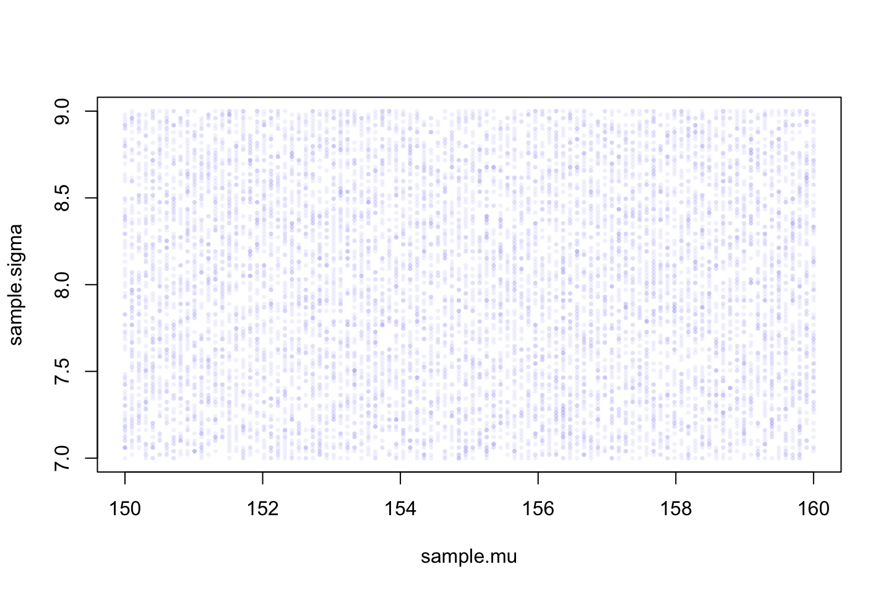
Now we can inspect the priors.
par(mfrow = c(2,1))
dens(sample.mu)
dens(sample.sigma)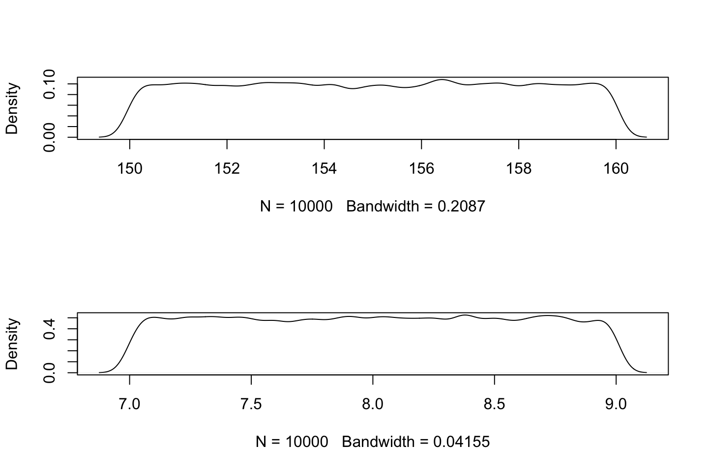
These should have been more or less normally distributed according to the book, but for some reason they are not.
4.3.4 Finding the posterior distribution with quap
This is using quadratic approximation.
data("Howell1")
d <- Howell1
d2 <- d[d$age >= 18,]We can spcify the model with the following:
\[h_i \sim Normal(\mu,\sigma)\] \[\mu \sim Normal(178,20)\] \[\sigma \sim Uniform(0,150)\]
While the equivilent in code is:
height ~ dnorm(mu,sigma)
mu ~ dnorm(178,10)
sigma ~ dunif(0,50)This can be placed in a list:
flist <- alist(
height ~ dnorm(mu,sigma)
,mu ~ dnorm(178,10)
,sigma ~ dunif(0,50)
)Now we can fit the model to the data:
m4.1 <- quap(flist,data = d2)
precis(m4.1)
|
|
|
|
4.3.5 Sampling from a quap
Now we are going to sample from the quadratic approximation.
Covariances is key to quadratic approximation. This can be found with:
vcov(m4.1)## mu sigma
## mu 0.1695354471 0.0008701619
## sigma 0.0008701619 0.0849109920This tells us how each parameter (unobserved) relates to every other parameter in the posterior distribution. In this scenario covariance does not matter a lot, but when we have a predictor variable, it will be key.
This can be extended to 2 elements:
- A vector of variances for the parameters
- A correlation matrix that tells us how changes in any parameter lead to correlated changes in others.
diag(vcov(m4.1))
cov2cor(vcov(m4.1))## mu sigma
## 0.16953545 0.08491099
## mu sigma
## mu 1.000000000 0.007252502
## sigma 0.007252502 1.000000000We see that a change of 1 in mu will lead to a change of 1 in mu, and it will lead to a change of 0.0018 in sigma. This is very small, hence we can see that there is no correlation between the two of these. Thus, learning the mean will not tell anything about the standard deviation.
Getting samples
post <- extract.samples(m4.1,n = 10000)
head(post)| mu | sigma |
|---|---|
| 154.2506 | 7.260139 |
| 155.2653 | 7.831658 |
| 155.2295 | 8.015096 |
| 155.4242 | 7.819525 |
| 154.6868 | 8.088762 |
| 154.5212 | 8.095557 |
precis(post)
|
|
|
|
|
We can see that distributions look more or less normal.
plot(post,pch = 20
,col = col.alpha(rangi2,0.1))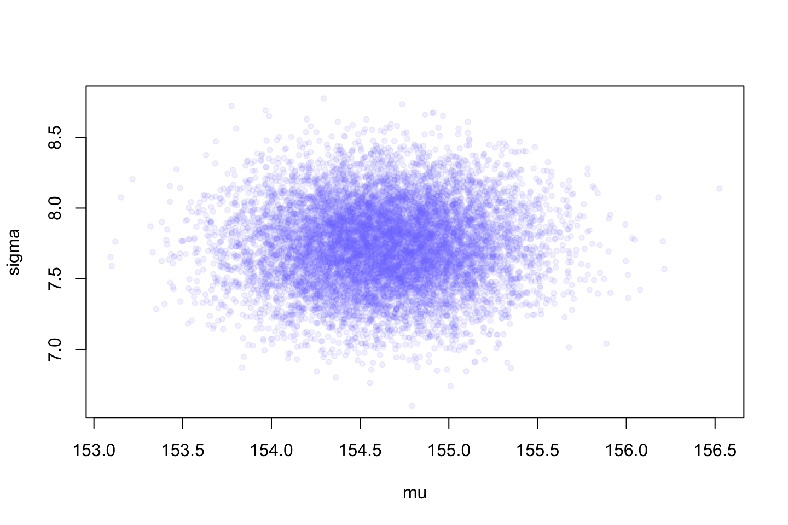
4.4 Linear prediction
The procedure that we end up going through:
1. Use link to generate distributions of posterior value for mu.
2. Use summary functions like mean or PI to find averages and lower and upper bounds of mu, for each value of the predictor variable.
3. Finally, use plotting functions like lines and shade to draw the lines and intervels. Or you might plot the distributions of the predictions, or do even something else.
Now we are going to regress one variable on another, hence we have a predictor and an outcome variable. The following example is predicting height given the weight.
plot(d2$height ~ d2$weight)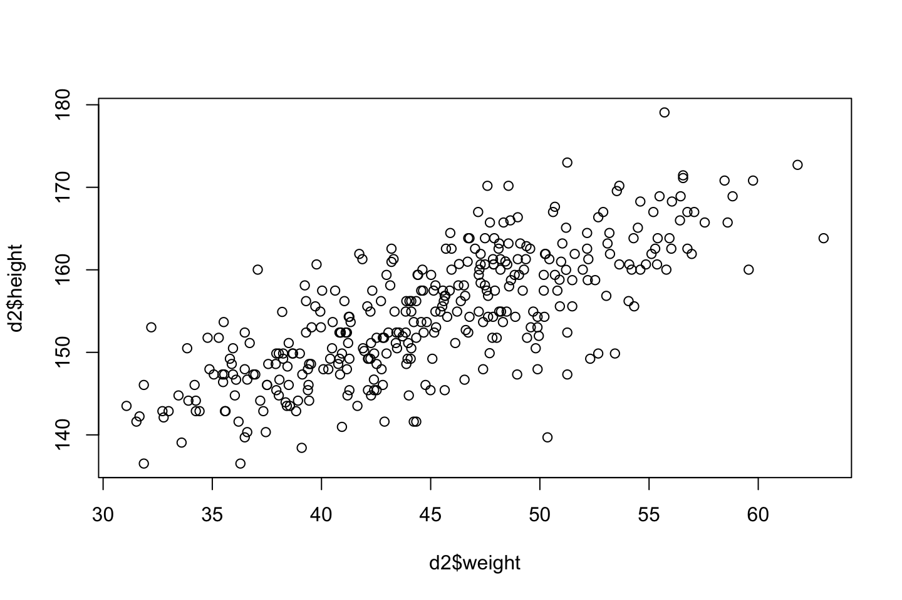
There is clearly a relationship.
4.4.1 The lienar mdoel strategy
To specify this model we will say:
let x = weight, thus \(\bar{x}\) is the average weight parameter of the observed variable.
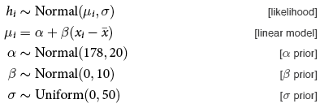
Now we see that heights are stochastic and normally distributed and is described by the mean and standard deviation. To predict height, we need the mean of the weight variable. This one is deterministic hence the = and not the ~ sign. It consists of the priors (assumptions), where we express \(\alpha\), \(\beta\) and \(\sigma\). These are all stochastic, where \(\alpha\) and \(\beta\) are normally distributed while \(\sigma\) is uniform.
Now one can simulate the priors.
set.seed(2971)
N <- 100
a <- rnorm(N,178,20) #notice we cannot take the mean of the data, as it is a prior!!!
b <- rnorm(N,0,10)This returns 100 pairs of \(\alpha\) and \(\beta\). This can be plotted with:
plot(NULL
,xlim=range(d2$weight), ylim=c(-100,400)
,xlab="weight", ylab="height" )
abline(h=0, lty=2)
abline(h=272, lty=1, lwd=0.5)
mtext("b ~ dnorm(0,10)")
xbar <- mean(d2$weight)
for (i in 1:N ) curve(a[i] + b[i]*(x - xbar)
,from=min(d2$weight), to=max(d2$weight)
,add=TRUE
,col=col.alpha("black",0.2))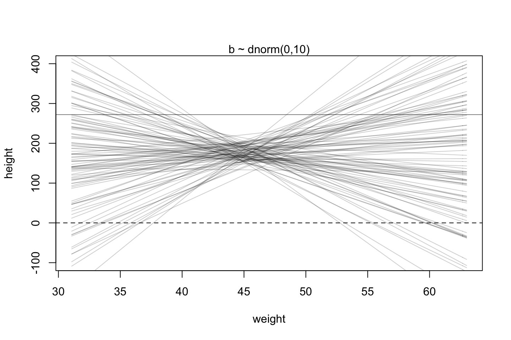
We see that that we get many predictions where we expect a person to be higher than the worlds largest and smaller than the worlds smallest. We can address with by taking the logarithm, which is done in the following:
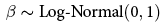
Hence we see that log is added to the equation.
b <- rlnorm(10000,0,1)
dens(b,xlim = c(0,5),adj=0.1)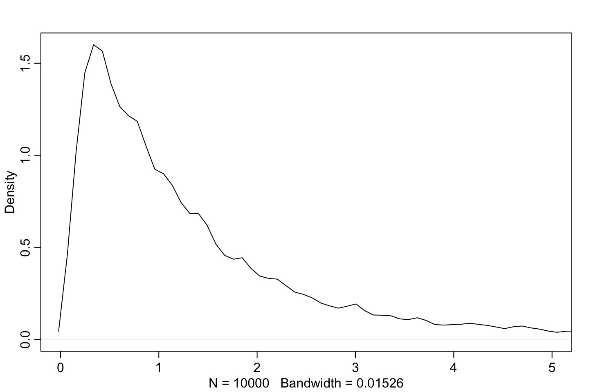
Doing the prior predictive simulation again, to compare with the logarithm of beta.
par(mfrow = c(1,2))
set.seed(2971)
N <- 100
a <- rnorm(N,178,20)
b <- rnorm(N,0,10)
plot(NULL,xlim=range(d2$weight), ylim=c(-100,400),xlab="weight", ylab="height" )
abline(h=0, lty=2)
abline(h=272, lty=1, lwd=0.5)
mtext("b ~ dnorm(0,10)")
xbar <- mean(d2$weight)
for (i in 1:N ) curve(a[i] + b[i]*(x - xbar),from=min(d2$weight), to=max(d2$weight),add=TRUE,col=col.alpha("black",0.2))
#With beta logarithm
set.seed(2971)
N <- 100 # 100 lines
a <- rnorm(N, 178, 20)
b <- rlnorm(N, 0, 1) #RLNORM for logarithm
plot(NULL ,xlim=range(d2$weight), ylim=c(-100,400),xlab="weight", ylab="height")
abline(h=0, lty=2)
abline(h=272, lty=1, lwd=0.5)
mtext("b ~ dnorm(0,10)")
xbar <- mean(d2$weight)
for (i in 1:N ) curve(a[i] + b[i]*(x - xbar),from=min(d2$weight), to=max(d2$weight),add=TRUE,col=col.alpha("black",0.2))(#fig:4.41)Left = Initial model, Right = logarithm of beta
Now we see that the joint prior for \(\alpha\) and \(\beta\) are realistict.
Joint prior = The predicted height given the wiehgt, which rely on alpha and beta priors that we have made.
Then, what is the correct prior? It is a fallacy that there is one unique value that is optimal for the prior. Thus one must reason for the selection of the prior and perhaps try different priors to see what it suggest. Essentially the prior is just information that you give the model and can e.g., work as a constrain, as we see in the example above where the priors initially returned extreme values, which we need to tamper down.
Then one could say that we should compare the predictions with the actual sample and then optimize against this. Although one must be weary, as this will just yield to fitting against the sample, and is likely not to be the correct model. Although it boiles down to the purpose of the model.
4.4.2 Finding the posterior distribution
We see that we have the following model specification:
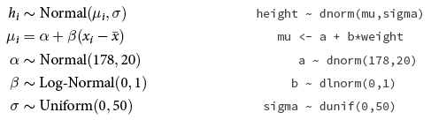
Notice that = is exchanged with <-, that is by convention and must be used when specifying the model in R.
data("Howell1")
d <- Howell1
d2 <- d[d$age >= 18,]
xbar <- mean(d2$weight)
#Fit the model
m4.3 <- quap(
alist(
height ~ dnorm(mu,sigma)
,mu <- a + b * (weight - xbar) #Notice each weight is subtracted by the mean, the closer to the mean the smaller effect of b
,a ~ dnorm(178,20)
,b ~ dlnorm(0,1)
,sigma ~ dunif(0,50)
)
,data = d2
)4.4.3 Interpreting the posterior distribution
One can interpret the posterior distribution in two ways:
- By assessing tables of information
- Plotting the posterior distributions
It is often easiest to deduct conclusions based on the plots. The following make examples of both the tables and the plots.
4.4.3.1 Tables fo marginal distributions
Marginal posterior distribution of the parameters:
precis(m4.3
,prob = 0.89 #PI for 89% percent, also default
)
|
|
|
|
For example we see that the mean height increase by a factor of 0.9 if one person is 1 kg heavier, hence the heavier, the taller.
The 5.5% and 94.5% indicate that 89% percent of the time one gets between 84cm and 97 cm taller if one is 1kg heavier.
One can also assess the covariances:
round(vcov(m4.3),3)## a b sigma
## a 0.073 0.000 0.000
## b 0.000 0.002 0.000
## sigma 0.000 0.000 0.037And we see that there is very little covariance among the parameters.
This is a visual representation of the same.
pairs(m4.3)4.4.3.2 Plotting posterir inference against the data
First the raw data is plotted:
par(mfrow = c(1,1))
plot(height ~ weight,data = d2,col = rangi2)
post <- extract.samples(m4.3)
a_map <- mean(post$a)
b_map <- mean(post$b)
curve(expr = a_map + b_map * (x - xbar),add = TRUE) #Ability to plot a function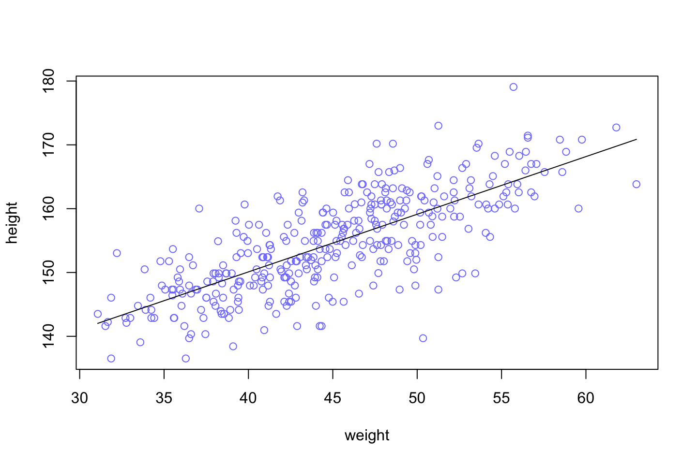
We see that the function we defined based on the posterior seem reasonable, although there are many plausible lines.
Hence we are going to look into dealing with uncertainty.
4.4.3.3 Adding uncertainty around the mean
We are going to make many of the lines to interprete where they end up, hence also reflecting uncertainty.
post <- extract.samples(m4.3) #Default = 10.000
post[1:5,]| a | b | sigma |
|---|---|---|
| 154.5789 | 0.9376825 | 5.220756 |
| 154.4067 | 0.8937310 | 4.752735 |
| 154.4622 | 0.9150822 | 5.341227 |
| 154.2649 | 0.9236067 | 5.160423 |
| 155.1258 | 0.9495934 | 5.108891 |
N <- 150 #No. of samples
dN <- d2[1:N,] #subsetting
#Approximating the the
mN <- quap(
alist(
height ~ dnorm( mu , sigma )
,mu <- a + b*( weight - mean(weight) )
,a ~ dnorm( 178 , 20 )
,b ~ dlnorm( 0 , 1 )
,sigma ~ dunif( 0 , 50 )
)
,data=dN
)The following will show one example where we loop of the data data fit the line.
n <- 20 #No of loops
# extract n samples from the posterior distribution
post <- extract.samples(mN ,n=n)
# display raw data and sample size
plot(x = dN$weight
,y = dN$height
,xlim=range(d2$weight),ylim=range(d2$height)
,col=rangi2
,xlab="weight",ylab="height")
mtext(concat("N = ",N,", Iterations = ",n))
# plot the lines, with transparency
for ( i in 1:n)
#Draw a and b values from the subset of the data
curve(post$a[i] + post$b[i]*(x-mean(dN$weight))
,col=col.alpha("black",0.3)
,add=TRUE)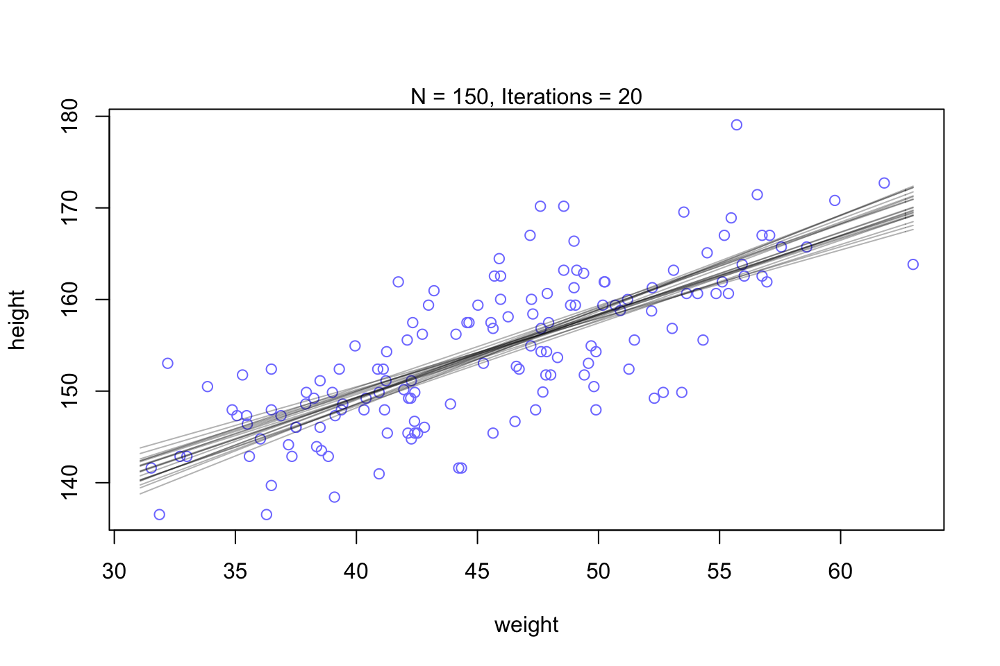
One will see that the more observations we include, the more certain will the model become. One will often experience that we are more confident around the mean and less in the ends of the x-range.
4.4.3.4 Plotting regression intervlas and contours
Now lets start an example where the weight is fixed to 50 kg. We will see that a person with 50kg is not fixed to one height, but some will have greater certainty.
We see that we get 10.000 samples, thus 10.000 priors for both a and b and thus we can simulate the expected height for such a given person.
post <- extract.samples(m4.3,n = 10000)
mu_at_50 <- post$a + post$b * (50-xbar)
dens(x = mu_at_50,col = rangi2,lwd = 2,xlab = "mu|weight=50")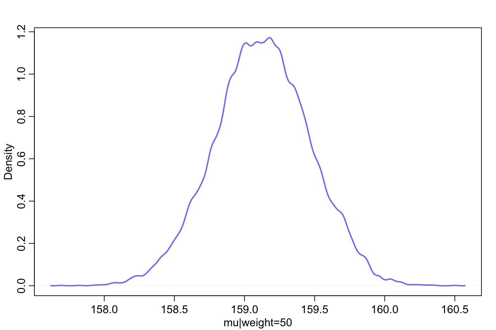
Now what we want to do is the same, but for all weights. For this one can use the link function.
mu <- link(m4.3,n = 1000) #1000 is also default
str(mu)## num [1:1000, 1:352] 158 157 157 157 157 ...We see that 352 roes in the data hence we get a matrix 352 columns (one for each individual) with 1.000 rows.
# define sequence of weights to compute predictions for these values will be on the horizontal axis
weight.seq <- seq(from=25, to=70, by=1)
# use link to compute mu for each sample from posterior and for each weight in weight.seq
mu <- link( m4.3 , data=data.frame(weight=weight.seq) )
str(mu)## num [1:1000, 1:46] 136 136 136 137 137 ...Now we see that since we fed 46 values for the weight, we get 46 columns instead of one pr invidual.
plot(height ~ weight,data = d2,type="n") #use type="n" to hide raw data
# loop over samples and plot each mu value
for (i in 1:100)
points(weight.seq, mu[i,] ,pch=16, col=col.alpha(rangi2,0.1))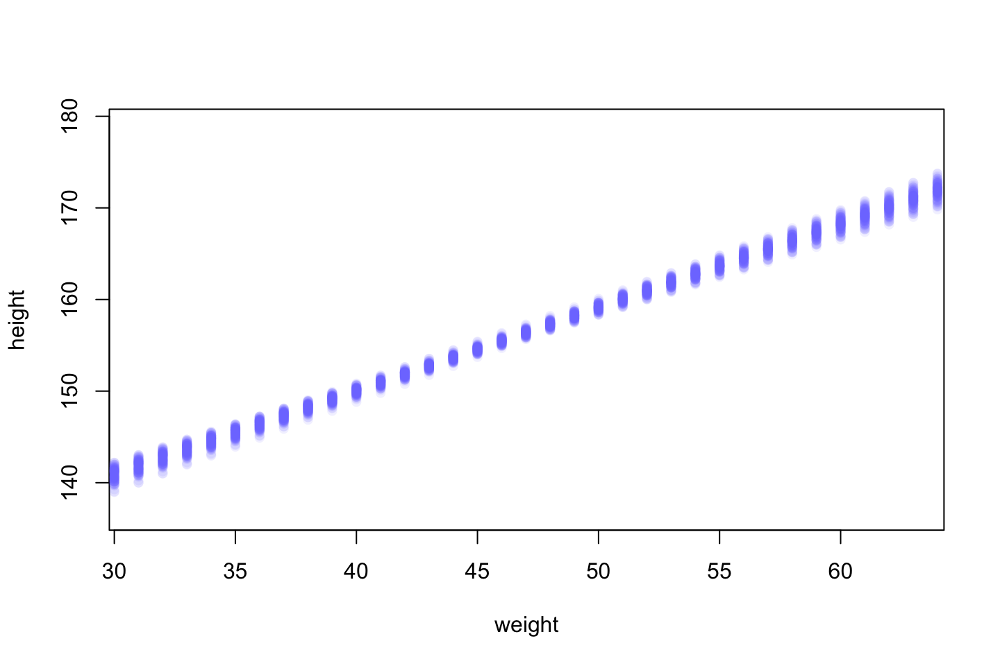
Finally we will summarize the distribution for each weight value.
# summarize the distribution of mu
mu.mean <- apply(mu, 2, mean) #46 values, one for each weight
mu.PI <- apply(mu, 2, PI, prob=0.89) #The 89% PI for each meanmu.mean = the average height (mu) for each weight value. And the PI is just accompanied with this as well.
Now we plot the means and the PI ontop of the data.
#Raw data plot
plot(height ~ weight, data = d2, col = col.alpha(rangi2,0.5))
#Ploatting MAP line (mean mu for each weight)
lines(x = weight.seq,y = mu.mean)
#Plotting PI intervals for each weight
shade(mu.PI,weight.seq)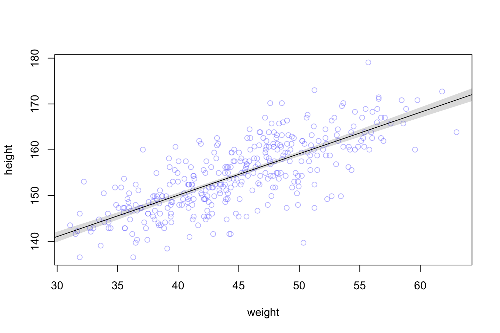
NOTICE THAT THIS IS PREDICTION OF AVERAGE HEIGHTS, IN THE FOLLOWING WE MAKE INTERVALS FOR ACTUAL HEIGHTS
4.4.3.5 Prediction intevals
Now we are going to predict actual heights. The following is an example of actual predictions and generating a band of percentile interval.
#Simulate height (Simulates posterior observations for map and map2stan model fits.)
sim.height <- sim(m4.3, data=list(weight=weight.seq)) #n = 1000
str(sim.height)## num [1:1000, 1:46] 136 131 140 139 136 ...This contains simulated heights and not distributions as we saw previously.
Now we can generate the PI that we are going to plot.
height.PI <- apply(sim.height,2,PI,prob = 0.89)
height.HPDI67 <- apply(sim.height,2,HPDI,prob = 0.67)
height.HPDI89 <- apply(sim.height,2,HPDI,prob = 0.89)
height.HPDI97 <- apply(sim.height,2,HPDI,prob = 0.97)Lastly we need to plot the predictions and the percentile interval.
#Plotting the data points
plot(height ~ weight,data = d2,col = col.alpha(rangi2,0.5))
#Draw MAP line
lines(weight.seq,y = mu.mean)
#Draw HPDI region for simulated heights, notice I added two additional regions
shade(height.HPDI67,weight.seq)
shade(height.HPDI89,weight.seq)
shade(height.HPDI97,weight.seq)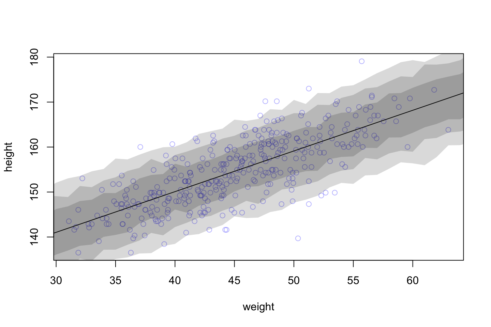
Now we see that the region is far wider.
4.5 Curves form lines
This is technically the same, but we add complexity in the form of more predictors. We approach this with polynomial regression and splines.
4.5.1 Polynomial regression
This is basically using the same variable, but transforming it into second or third order polynomials.
When doing polynomials you are at risk of generating very large numbers, hence one should standardize the variable to avoid this. This also means that interpreting the effects from each parameter is more difficult.
Now we can specify the model with the following:
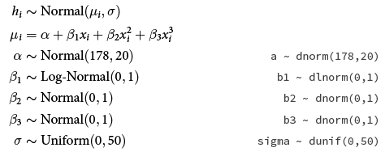
Notice that this is for a cubic polynomial regression. One can just disregard $/beta_3$ in a quadratic polynomial.
The following will plot the example of:
#Standardize weights
d$weight_s <- ( d$weight - mean(d$weight) )/sd(d$weight)
#Add vector of squared values, for the polynomial variable
d$weight_s2 <- d$weight_s^2
d$weight_s3 <- d$weight_s^3 #For the cubic model
#Specfify models
#Linear model
m4.4 <- quap(
alist(
height ~ dnorm( mu , sigma ) ,
mu <- a + b1*weight_s ,
a ~ dnorm( 178 , 20 ) ,
b1 ~ dlnorm( 0 , 1 ) ,
sigma ~ dunif( 0 , 50 )
)
,data = d
)
#Quadratic model (4.65)
m4.5 <- quap(
alist(
height ~ dnorm( mu , sigma ) ,
mu <- a + b1*weight_s + b2*weight_s2 ,
a ~ dnorm( 178 , 20 ) ,
b1 ~ dlnorm( 0 , 1 ) ,
b2 ~ dnorm( 0 , 1 ) ,
sigma ~ dunif( 0 , 50 )
)
,data = d
)
#Cubic model (4.69)
d$weight_s3 <- d$weight_s^3
m4.6 <- quap(
alist(
height ~ dnorm( mu , sigma ) ,
mu <- a + b1*weight_s + b2*weight_s2 + b3*weight_s3 ,
a ~ dnorm( 178 , 20 ) ,
b1 ~ dlnorm( 0 , 1 ) ,
b2 ~ dnorm( 0 , 10 ) ,
b3 ~ dnorm( 0 , 10 ) ,
sigma ~ dunif( 0 , 50 )
)
,data=d
)
#Plotting
par(mfrow = c(1,3))
#Linear
weight.seq <- seq( from=-2.2 , to=2 , length.out=30 )
pred_dat <- list( weight_s=weight.seq ) #adds degree of poly
mu <- link( m4.4 , data=pred_dat ) #need to change model
mu.mean <- apply( mu , 2 , mean )
mu.PI <- apply( mu , 2 , PI , prob=0.89 )
sim.height <- sim( m4.4 , data=pred_dat ) #need to change model
height.PI <- apply( sim.height , 2 , PI , prob=0.89 )
plot( height ~ weight_s , d , col=col.alpha(rangi2,0.5),pch = 20)
lines( weight.seq , mu.mean )
shade( mu.PI , weight.seq )
shade( height.PI , weight.seq )
#Quadratic
weight.seq <- seq( from=-2.2 , to=2 , length.out=30 )
pred_dat <- list( weight_s=weight.seq , weight_s2=weight.seq^2 ) #adds degree of poly
mu <- link( m4.5 , data=pred_dat ) #need to change model
mu.mean <- apply( mu , 2 , mean )
mu.PI <- apply( mu , 2 , PI , prob=0.89 )
sim.height <- sim( m4.5 , data=pred_dat ) #need to change model
height.PI <- apply( sim.height , 2 , PI , prob=0.89 )
plot( height ~ weight_s , d , col=col.alpha(rangi2,0.5),pch = 20)
lines( weight.seq , mu.mean )
shade( mu.PI , weight.seq )
shade( height.PI , weight.seq )
#cubic
weight.seq <- seq( from=-2.2 , to=2 , length.out=30 )
pred_dat <- list( weight_s=weight.seq , weight_s2=weight.seq^2, weight_s3=weight.seq^3 ) #adds degree of poly
mu <- link( m4.6 , data=pred_dat ) #need to change model
mu.mean <- apply( mu , 2 , mean )
mu.PI <- apply( mu , 2 , PI , prob=0.89 )
sim.height <- sim( m4.6 , data=pred_dat ) #need to change model
height.PI <- apply( sim.height , 2 , PI , prob=0.89 )
plot( height ~ weight_s , d , col=col.alpha(rangi2,0.5),pch = 20)
lines( weight.seq , mu.mean )
shade( mu.PI , weight.seq )
shade( height.PI , weight.seq )Figure 4.1: Comparison between a linear, quadratic and cubic model. Notice that the same variable is used, just with different degree of polynomials.
Table output for the polynomial
precis(m4.5)
|
|
|
|
Now we see that b2 for instance is more complicated, as it is squared values that the parameter is multiplied with. Notice that a is still the intercept with y.
4.5.2 Splines
This is an alternative way of adding curvature. We are going to use basis splines, i.e., B-splines.
The code is not exemplified yet. Do this. For now, see ??
It is basically just splines as we have seen earlier in ML.
4.6 Exercises
4.6.1 4M1
For the model definition below, simulate observed y values from the prior (not the posterior).
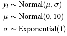
4.6.2 4M8
In the chapter, we used 15 knots with the cherry blossom spline. Increase the number of knots and observe what happens to the resulting spline. Then adjust also the width of the prior on the weights—change the standard deviation of the prior and watch what happens. What do you think the combination of knot number and the prior on the weights controls?